Respiro, movimento, presenza.
Ashtanga Vinyasa Yoga nella forma tradizionale, Hatha Yoga e Yoga in gravidanza, con Rosaria Torrisi: oltre trent'anni di pratica e di insegnamento, in classi piccole dove ognuno è seguito da vicino.
- Principianti benvenuti
- Classi guidate e Mysore Style
- Tre sedi a Catania
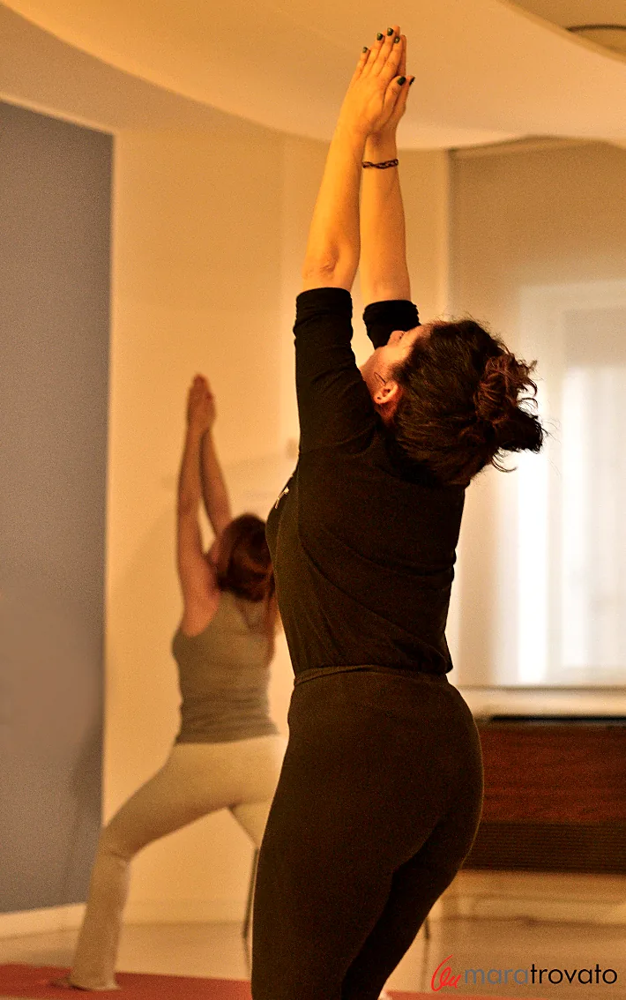
Tre strade, la stessa attenzione
Che tu stia cercando una pratica intensa e strutturata o un sostegno dolce durante l'attesa, ogni lezione parte dal respiro e dall'ascolto del corpo.
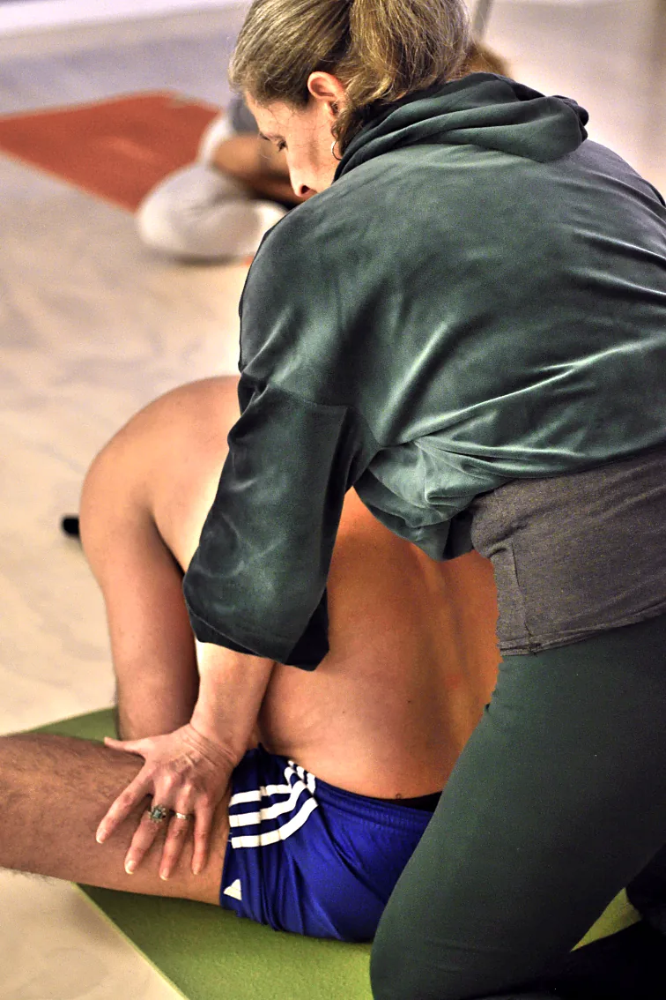
Ashtanga Vinyasa Yoga
La pratica tradizionale tramandata da Sri K. Pattabhi Jois: sequenze fisse in cui respiro e movimento si uniscono. Lezioni guidate per chi inizia e Mysore Style per chi conosce la sequenza.
Scopri l'Ashtanga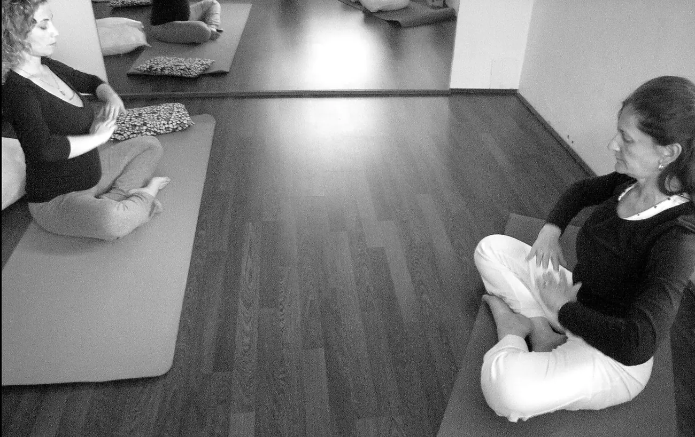
Yoga in gravidanza
Dalla 13ª settimana fino al parto: respirazione, rilassamento e posture specifiche per vivere la gravidanza con consapevolezza e prepararsi al parto. Non serve esperienza.
Scopri lo yoga in gravidanza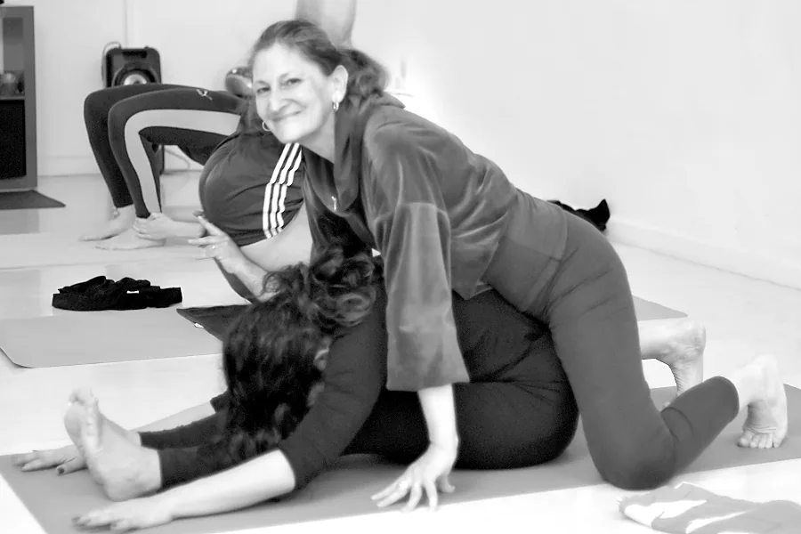
Hatha Yoga
Cura lo stato generale del corpo: gli equilibri energetici, le simmetrie posturali, la profondità del respiro e la coordinazione dei movimenti. Le posture integrano gradualmente corpo, mente e respiro, perché «il respiro è vita». Si pratica a tutte le età, anche nella versione dolce del mattino.
Vedi le lezioni di HathaProssime lezioni
Scegli la lezione e prenota il tuo posto in pochi secondi. Ricevi la conferma e, se cambi idea, basta un messaggio.
Caricamento del calendario…
Gli orari possono subire variazioni: in caso di cambiamenti ti avvisiamo noi.
Prezzi chiari, nessuna sorpresa
Scegli la formula più adatta a quanto vuoi praticare. Più vieni, meno spendi a lezione.
Come si paga
- In contanti, prima dell'inizio della lezione. Carnet e mensile si pagano alla prima lezione.
- Prenota sempre il tuo posto online o su WhatsApp.
- Non puoi venire? Avvisa almeno 12 ore prima: altrimenti la lezione viene scalata dal carnet.
- Se una lezione viene annullata da noi, il tuo credito resta valido.
- Carnet e mensili sono personali e non rimborsabili.
- È richiesta l'iscrizione annuale all'associazione (tessera e assicurazione).
Porta un'amica: se acquista un carnet, per te una lezione in omaggio.
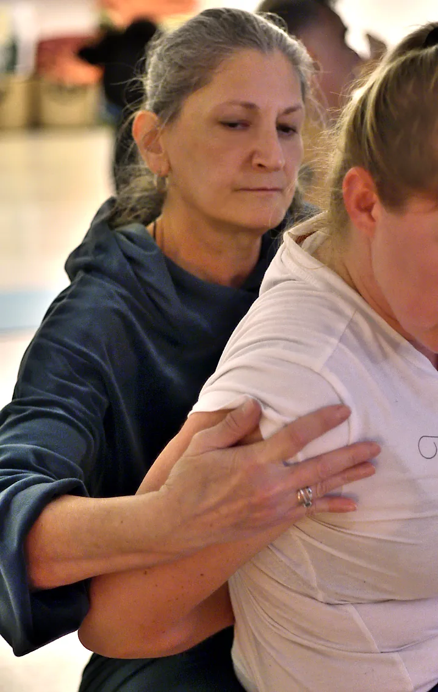
Rosaria Torrisi
Pratica Hatha Yoga dal 1990 e si è diplomata insegnante all'Accademia Yoga Sadhana e abilitata dalla Federazione Mediterranea Yoga. Dal 2000 studia l'Ashtanga Vinyasa Yoga con il Maestro Lino Miele, allievo diretto di Sri K. Pattabhi Jois, seguendolo nei seminari in Italia e in India.
Si è specializzata in Yoga e Donna (gravidanza, maternità, parto e puerperio), Yoga e Maturità, Yoga per bambini e Yoga nel sociale.
«Lo Yoga ci insegna a riconoscere i luoghi e i ruoli della nostra vita e a vivere pacificamente, senza inutili tensioni.»
Leggi il suo percorsoTrent'anni sul tappetino
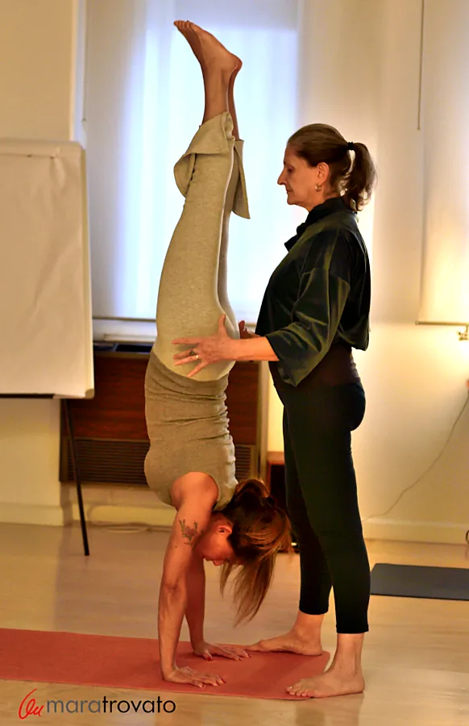
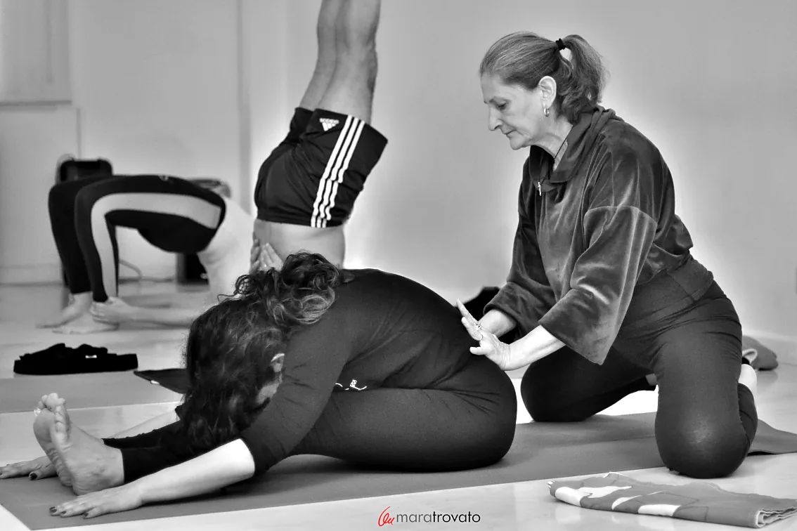
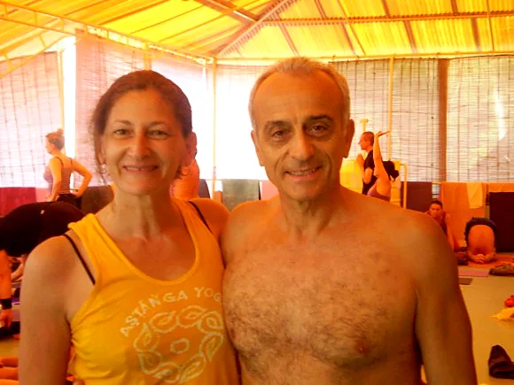
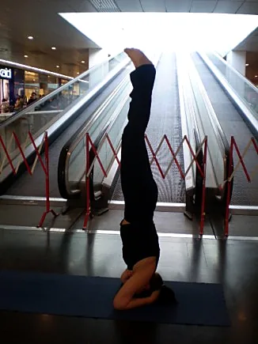
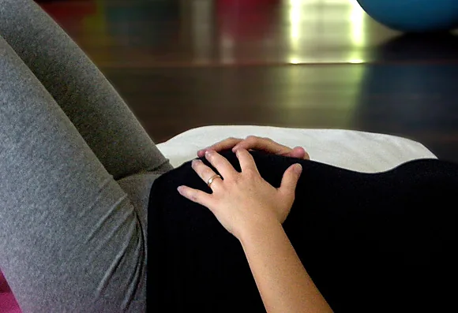
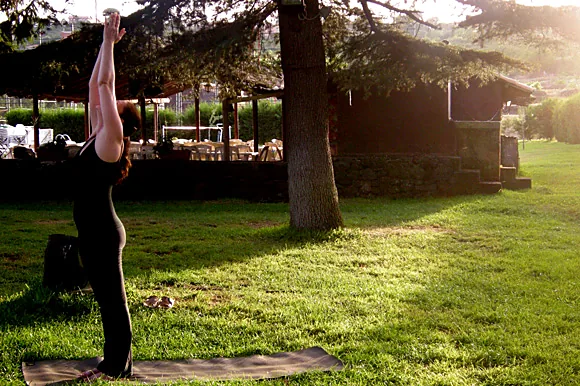
Ci vediamo in sala
Centro Yoga Visvamitra
Residence La Scogliera
Via Battello, 29 — Catania
Lunedì e mercoledì · Yoga in gravidanza, Hatha, Ashtanga e Mysore
Apri in Google MapsIstituto Leonardo da Vinci
Via G.B. De La Salle, 10/12
Zona Canalicchio — Catania
Venerdì e sabato · Ashtanga e Mysore Style
Apri in Google MapsStudio Yoga Catania
Via Acicastello, 15
Zona Ognina — Catania
Lunedì e giovedì mattina · Hatha Yoga dolce
Apri in Google MapsInformazioni e prenotazioni
Per orari, abbonamenti, lezioni individuali o di prova scrivici: ti rispondiamo il prima possibile.
Scrivici su WhatsAppIl primo passo è srotolare il tappetino.
Non servono esperienza né flessibilità: solo la voglia di ascoltarti.